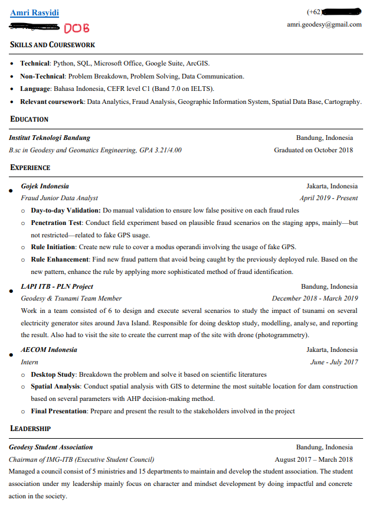
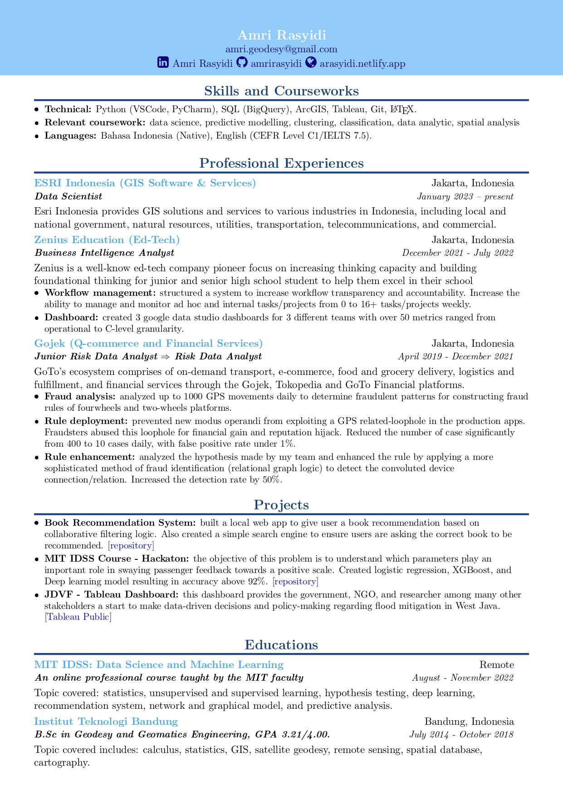
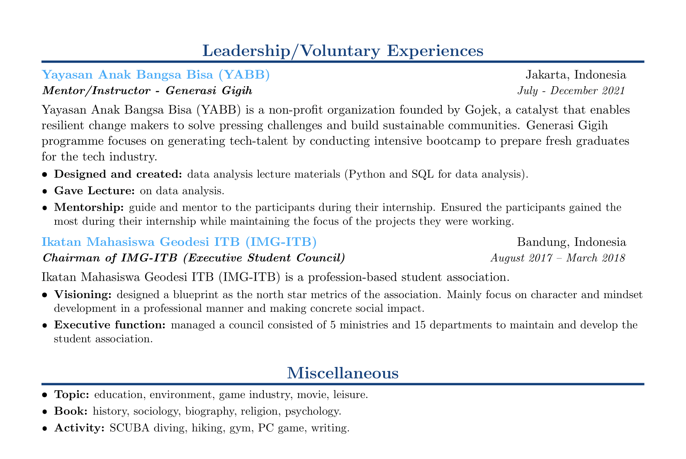

As a context, by the time I posted this entry, I actually work as a data scientist (thank god). So if you are asking, "What's with the title?" I'll give you a little background. Timeline context: it was 2 months into my unemployment when I got the idea to make this post. Hence the title.
If you read the first part of the unemployment arc series, you might remember that at the end of that post I "applied" to many job postings on LinkedIn to which none of them has a follow-up. In this post I will try to break down, what I think went wrong and how you can learn from my stupidity.
#1 - No Effort on Application
I write it as "applied" (with the apostrophe) for a reason. I didn't really apply. I just find the job posting with an "easy apply" tag on LinkedIn, then hit apply.
In retrospect, I don't think those job boards mean shit. I don't know whether it's true or not though.
Hit and run like that can drag you into a false sense of completion, thinking that you are really applying to many job posts, while in fact, well…not really. It is also, a waste of time, and energy.
What should I do instead?
Reach out directly to the stakeholders.
As a job seeker, finding a job is basically exposing yourself (certainly not in a perverted way) to the right person in the right place on the right medium. And there are many ways to do it. The most common and the most straightforward is of course applying for a job post. You are showcasing (exposing) your skills (in a resume or portfolio, medium) to the recruiters (person) when they actually need manpower (or womanpower or human power if you are woke) on your target company (place).
Let's add a bit more detail to this.
-
Who are they?
The 2 closest stakeholders are the recruiter and the hiring manager. -
Where to find them?
The job post page.
On LinkedIn, some of the job posts have the profile of the recruiter(s) in it, just add them and send them a message stating your interest. But sometimes, the job post doesn't have this information, here you have to dig a little bit deeper. You can go directly to the company page, open the people tab, and find someone that you think has something to do with the job post, again, could be the recruiter or the hiring manager. For recruiters, they usually have "recruiter" or "HR" in their title, for the hiring manager, it depends on the job post, let's say it is a data science job, find someone with "data science" in their title, better if it also has "leader" or "manager".
Not sure if they are the right person? Reach out anyway, you can ask something like "Hi, my name is [your name, don't use mine, thanks], I find that your company is looking for a [job title]. I'm interested and would like to know more about the opportunity. Do you know someone I can reach out to, to ask about this vacancy? Thanks!" or something along those lines. Idk, ask chatgpt to generate one for you.
You don't have to limit yourself to LinkedIn while trying to reach out. Some of them may be active on other social media, use your unparalleled stalking skills, you creep. Be creative :)
One more pro tip, while you are looking for someone to reach/connect with/ask, check their LinkedIn page, and go to activity. I think the one that has more recent activity is more likely to respond since it indicates they are recently active on LinkedIn.Some people only open their LinkedIn when looking for a job or recruiting, and go radio silence in between, so find someone with recent activity.
-
How to reach out?
I mentioned one before, just hit their DMs on LinkedIn or any social media for that matter. You can even send an email if you have the email address.
Just make sure (1) you make a short introduction and mention how the job interests you and how you are relevant for the role. (2) Mention your purpose of reaching out, can be a request for discussion. And since it's an email, better to mention your questions in it, i.e. no need to wait for them to respond first before laying out your questions. (3) Be nice. -
Extra miles, ask for a referral.
Referral helps you at least to increase the likelihood of (your resume) being seen by the recruiter. As a matter of fact, my current employment are the result of a referral I got from my senior in college.
People are arguing whether or not it is okay to ask for a referral from someone you barely know. Because it seems unprofessional. I'll say, just go for it. Especially if you are confident that you are a good fit for the position.
However, the ideal case would be, after you connect with the stakeholder, you can start building a relationship, gain trust, etc etc. But this takes time, so need a plan in advance, and we don't always have advance. But yes, I agree, this way is better. -
Things to keep in mind.
-
Just consider this as building a connection in general.
No need to hope that much about getting the job immediately after reaching out. -
Don't take it too personally.
Sometimes they say no to your enquiry, other times they don't reply at all. This is just a part of the process. -
Follow-up is okay.
If they don't respond the first time you ask them, it's okay to make a follow-up, ask them again, nicely. I don't really have an idea about the ideal timeframe between the first try and the follow-up and when to stop poking the same person, but I guess a week for follow-up and 2 follow ups are okay.
-
Just consider this as building a connection in general.
#2 - My Resume Suck Ass
Extending on the first point, this one is a little bit outside of the application effort, a little bit before to be more precise. I'll show you what my previous cv and how does it look like now.



I'm sure there are still things I can improve from my current CV, but compared to the "first" version of my CV, which seems very empty after looking at my current CV, I can point out the improvements I made. And I think it is actually normal to have this kind of progress, first cv should seem empty compared to your latest one.
What should I do instead?
-
Find feedback.
This could be from a professional, like, again, the 2 stakeholders, from someone experienced in the respective field, or from your friends. You can also find them anywhere, LinkedIn is again one place, numerous discord servers have this kind of channel. Again, be creative. -
Consciously spare some time to work on the feedback.
After getting those feedback, it's time to work on it. Those feedback means nothing if you don't pour them into your CV. From my experience, wording and quantification is the hardest part. Two ways to help you with this is to have a reference (other people's CV for example) or have someone to discuss it with. -
Extra point, make a "tangible" portfolio.
A result of your work. Which can be seen or tried by others.
If you trust me enough to comment/feedback on your resume, don't hesitate to reach out!
Disclaimer: I don't think I have the professional qualification to review your CV, so consider this as feedback from a friend.
A note on cover letter
I didn't mention cover letter, because I honestly find them redundant if not pointless altogether. Resume/CV gives you concise information in points, why would you want paragraphs of me explaining myself??
I heard so many times that a cover letter should tell something that is not in the CV, that's why maybe you think I'm saying "it is redundant" is stupid. Let's be honest here, most of us probably sugar-coated our CV at certain degree, it could be a little bit of an exaggeration or it could be a total lie. Now, imagine cover letter. The writer probably just writes what they think the stakeholders want to read.
If any HR or hiring manager is reading this post right now, I'm genuinely curious about your take on cover letter. Do you find them helpful, pointless, or situational?
Or maybe a better question would be, how much can you gather from CV only, resume only, and both? Can cover letter really be a "deal or bail"?
#3 - Career Switch
Here is my career in data so far:
- Gojek - Fraud analyst
- Zenius - Business Intelligence Analyst
- ESRI Indonesia - Data Scientist (this one is still an abstraction, a target if you will, by the time I plan to write this post)
If you notice, both the industries (the company) and the roles are completely different. This is dangerous, or difficult at least. A better career switch would be pick either a different industry or role, not both.
What should I do instead?
There's nothing I should do, really. I got the job after all lol.
But to have a safer manoeuvre, switching to only one of them will help you have a smoother transition.
Having a different industry but the same role ensures that you still have the expertise on achieving what you should be doing. For example, you are a SE previously in ed-tech industry, then got an offer as SE in biotech industry. The request and user stories might be completely different, but you'll still be using the same programming language, framework, architecture, etc (I guess).
Having a different role within the same industry will retain your understanding of the industry. Example, you are switching from BI analyst to product analyst within the same industry, you'll be doing different things, but you'll still easily understand the underlying requirement behind those different requests.
Hope this is helpful.
Peace!